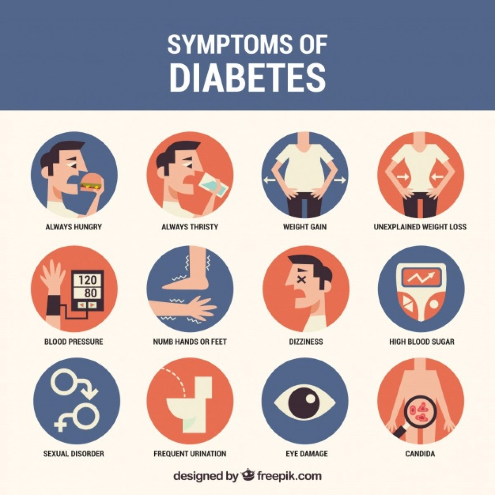

Type 1 diabetes (T1D), formerly known as juvenile diabetes, is an autoimmune disease that originates when cells that make insulin (beta cells) are destroyed by the immune system. Insulin is a hormone required for the cells to use blood sugar for energy and it helps regulate glucose levels in the bloodstream.The cause of type 1 diabetes is unknown, but it is believed to involve a combination of genetic and environmental factors. The underlying mechanism involves an autoimmune destruction of the insulin-producing beta cells in the pancreas.Diabetes is diagnosed by testing the level of sugar or glycated hemoglobin (HbA1C) in the blood.People of all ages can develop type 1 diabetes. If you have type 1 diabetes, your pancreas doesn't make insulin or makes very little insulin. Insulin helps blood sugar enter the cells in your body for use as energy. Without insulin, blood sugar can't get into cells and builds up in the bloodstream.
Type 2 diabetes
Type 2 diabetes, formerly known as adult-onset diabetes, is a form of diabetes mellitus that is characterized by high blood sugar, insulin resistance, and relative lack of insulin.Common symptoms include increased thirst, frequent urination, and unexplained weight loss.Type 2 diabetes primarily occurs as a result of obesity and lack of exercise. Some people are genetically more at risk than others.Type 2 diabetes makes up about 90% of cases of diabetes, with the other 10% due primarily to type 1 diabetes and gestational diabetes.The development of type 2 diabetes is caused by a combination of lifestyle and genetic factors.Lifestyle factors are important to the development of type 2 diabetes, including obesity and being overweight (defined by a body mass index of greater than 25), lack of physical activity, poor diet, psychological stress, and urbanization
Symptoms of Diabetes

The classic symptoms of untreated diabetes are polyuria, thirst, and weight loss. Several other non-specific signs and symptoms may also occur, including fatigue, blurred vision, and genital itchiness due to Candida infection. About half of affected individuals may also be asymptomatic. Type 1 presents abruptly following a pre-clinical phase, while type 2 has a more insidious onset; patients may remain asymptomatic for many years.
If you have any of the following diabetes symptoms, see your doctor about getting your blood sugar tested: